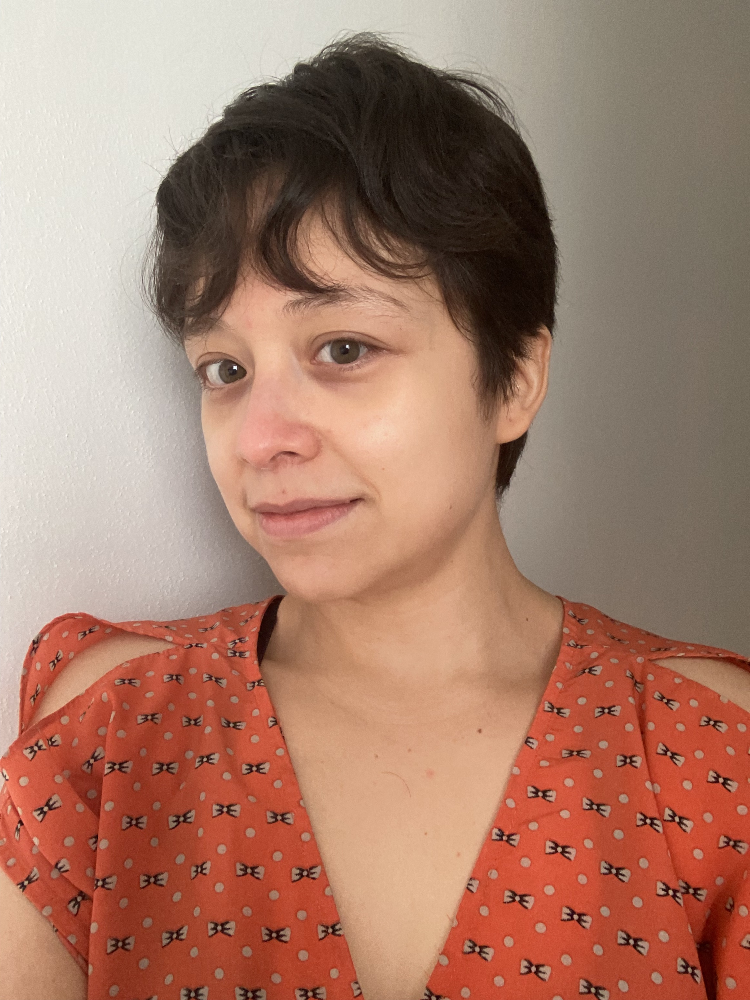

|
Airam Blancas |
|  |
Instituto Tecnológico Autónomo de México
Email: airam.blancas-at-itam.mx |
Since August 2020, I am associate professor in the Department of Statistics at ITAM.
My research interests are in the development of probability theory and stochastic processes to describe the genetic structure of populations under the action of evolutionary forces.
I completed my PhD in Probability and Statistics at CIMAT in 2016, co-supervised by Victor Rivero and Arno Siri-Jegousse. Then, I got a CONACyT postdoctoral fellow to collaborate for two years in the group of Anton Wakolbinger at Goethe University Frankfut in Germany. In 2019, I started a second postdoc co-supervised by Julia Palacios and Noah Rosenberg at Stanford University.